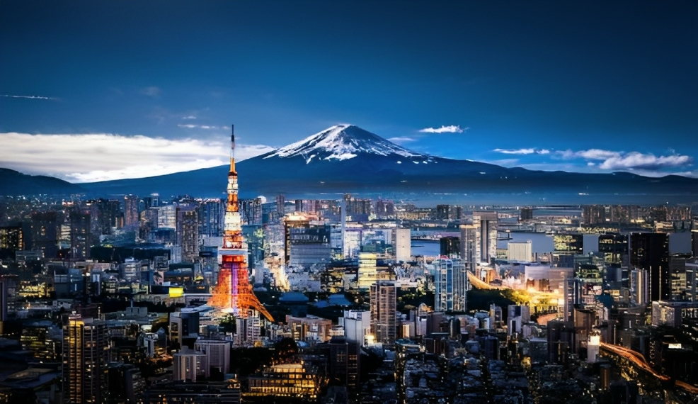
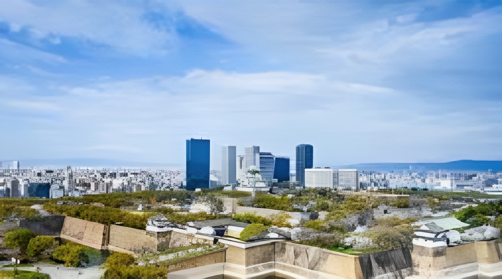
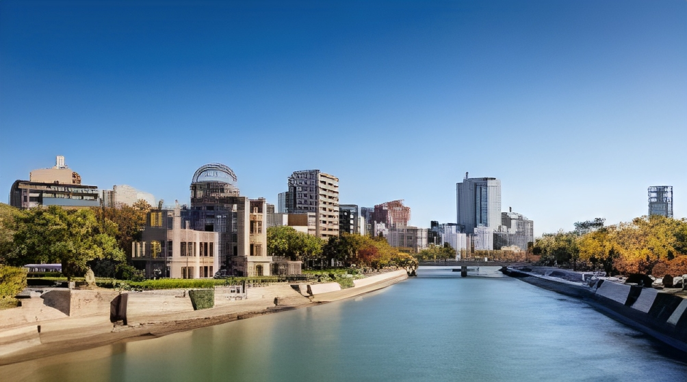

Synopsis
Let us discover more in
Tokyo, Osaka, Hiroshima!
 |
Tokyo, the capital, is a bustling metropolis where tradition and modernity coexist, offering vibrant neighborhoods, iconic landmarks like the Tokyo Tower, and a world-renowned food scene. |
Osaka is a dynamic city in the Kansai region, famous for its street food, historic Osaka Castle, and Universal Studios Japan. It's a hub of commerce and entertainment, known for its friendly and outgoing people. |
 |
 |
Hiroshima, on the other hand, carries a profound historical significance due to the atomic bombing during World War II. The Peace Memorial Park and Hiroshima Peace Memorial (Atomic Bomb Dome) stand as solemn reminders. Despite its tragic history, Hiroshima is a city of hope and resilience, surrounded by scenic beauty and a commitment to peace. |